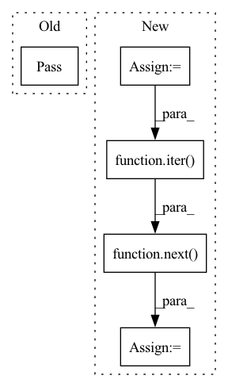

Pattern ID :22613
Before Change
pass
def test_centernet(self):
pass
class TestUtils:
def test_render_gaussian(self):
passAfter Change
def test_centernet(self):
ds = COCODataset(self.coco_dir, "val2017")
coco_dataloader = DataLoader(ds, batch_size=4, collate_fn=collate_bbox_labels)
batch = next( iter( coco_dataloader))
// print(type(batch))
// print(batch["image"].shape)
backbone = ResNetBackbone()In pattern: SUPERPATTERN
Frequency: 3
Non-data size: 5
Instances Fragment ID: 71399014
Project Name: gau-nernst/centernet-lightning
Commit Name: 2f52f97af43fba92a37d70bf243edb8c93e3459b
Time: 2021-05-27
Author: gau.nernst@yahoo.com.sg
File Name: test_centernet.py
M Class Name: TestModels
N Class Name: TestModels
M Method Name: test_centernet(1)
N Method Name: test_centernet(1)
M Parent Class:
N Parent Class:
M File Name: test_centernet.py
N File Name: test_centernet.py
M Start Line: 52
M End Line: 52
N Start Line: 99
N End Line: 115
Before Change
def test_freeze_estimator(self):
//create model, freeze it
//infer two times on same datapoint, check if all equal
pass
if __name__ == "__main__":
unittest.main()After Change
download=True
)
dataloader = torch.utils.data.DataLoader(dataset=dataset,
batch_size=16,
shuffle=True)
batch = next( iter( dataloader))
@variational_estimator
class BayesianMLP(nn.Module):
def __init__(self, input_dim, output_dim): Fragment ID: 71399017
Project Name: piesposito/blitz-bayesian-deep-learning
Commit Name: 769d3e22647aa19ae5d12fe31e6f6ca79e915211
Time: 2020-03-03
Author: piero.skywalker@gmail.com
File Name: blitz/utils/tests/variational_estimator_test.py
M Class Name: TestVariationalInference
N Class Name: TestVariationalInference
M Method Name: test_freeze_estimator(1)
N Method Name: test_freeze_estimator(1)
M Parent Class: unittest.TestCase
N Parent Class: unittest.TestCase
M File Name: blitz/utils/tests/variational_estimator_test.py
N File Name: blitz/utils/tests/variational_estimator_test.py
M Start Line: 75
M End Line: 75
N Start Line: 75
N End Line: 106
Before Change
//create model
//do two inferences over model
//check if able to gather variance over predictions
pass
def test_freeze_estimator(self):
//create model, freeze it
//infer two times on same datapoint, check if all equalAfter Change
download=True
)
dataloader = torch.utils.data.DataLoader(dataset=train_dataset,
batch_size=16,
shuffle=True)
batch = next( iter( dataloader))
@variational_estimator
class BayesianMLP(nn.Module):
def __init__(self, input_dim, output_dim): Fragment ID: 71399016
Project Name: piesposito/blitz-bayesian-deep-learning
Commit Name: 30866b7f3581126d8a865a22816816dabcd5d25e
Time: 2020-03-03
Author: piero.skywalker@gmail.com
File Name: blitz/utils/variational_estimator_test.py
M Class Name: TestVariationalInference
N Class Name: TestVariationalInference
M Method Name: test_variance_over_prediction(1)
N Method Name: test_variance_over_prediction(1)
M Parent Class: unittest.TestCase
N Parent Class: unittest.TestCase
M File Name: blitz/utils/variational_estimator_test.py
N File Name: blitz/utils/variational_estimator_test.py
M Start Line: 37
M End Line: 37
N Start Line: 37
N End Line: 70